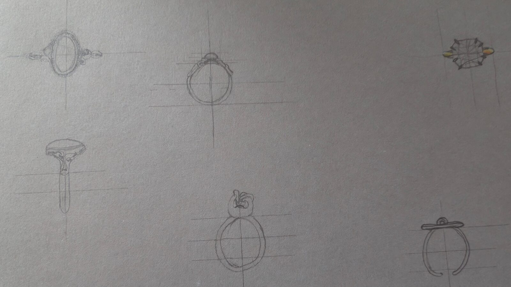
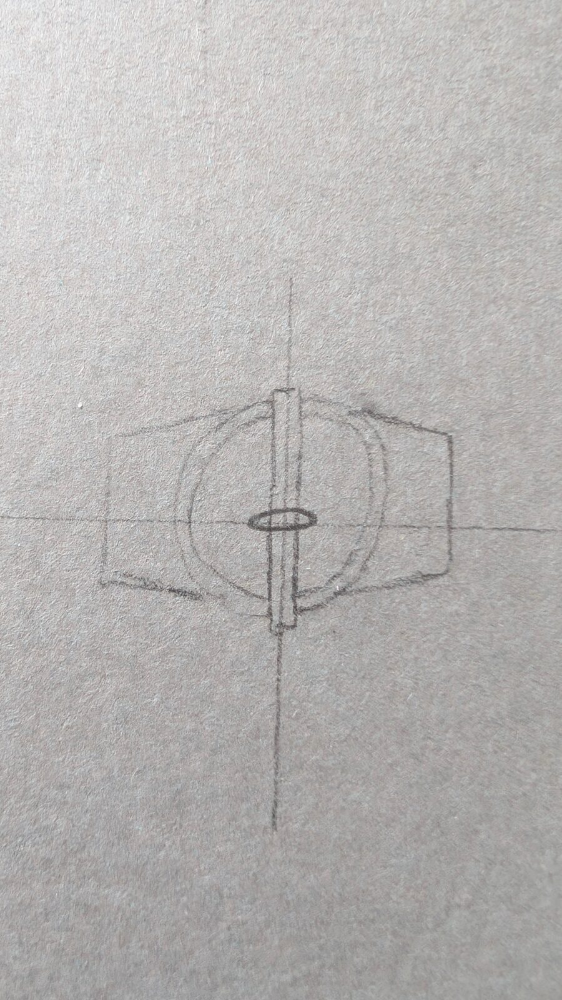
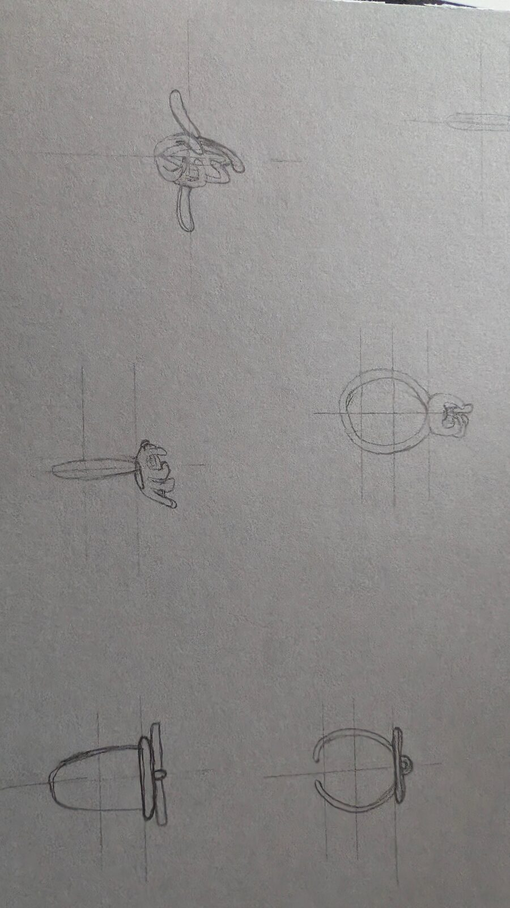
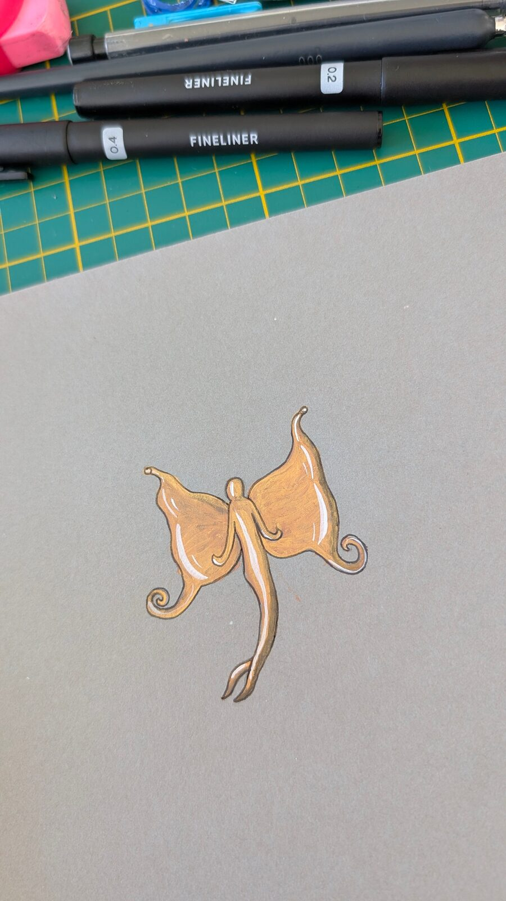
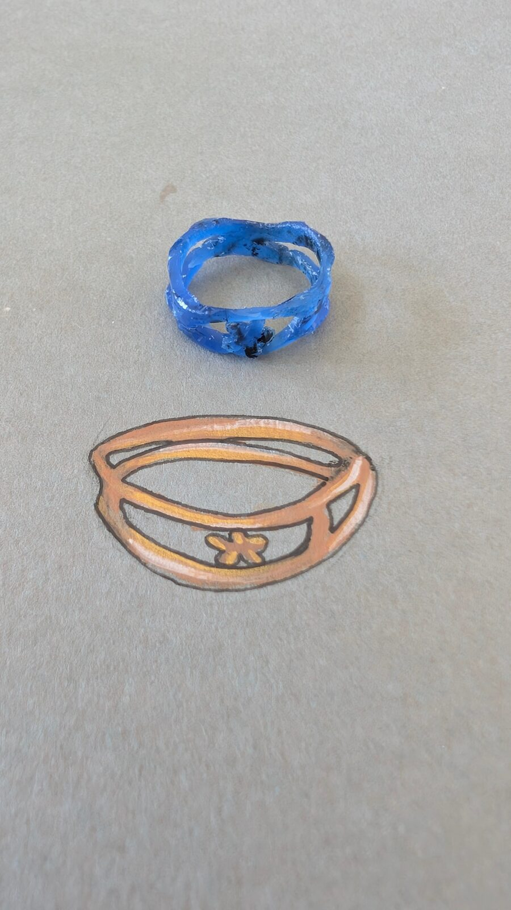
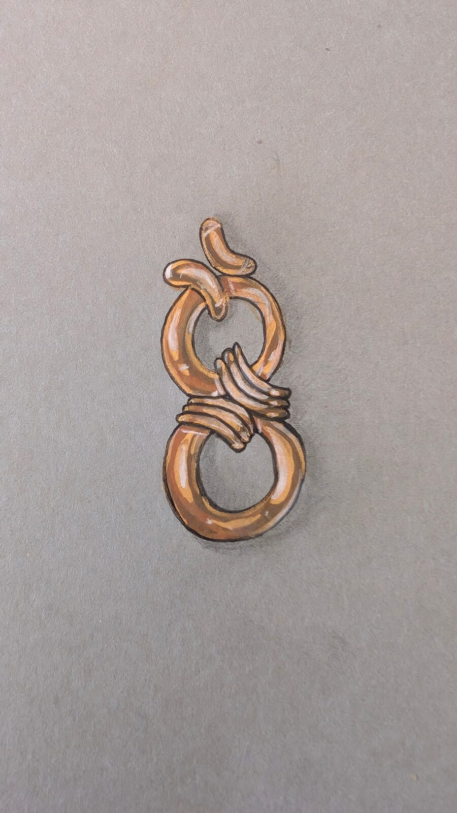
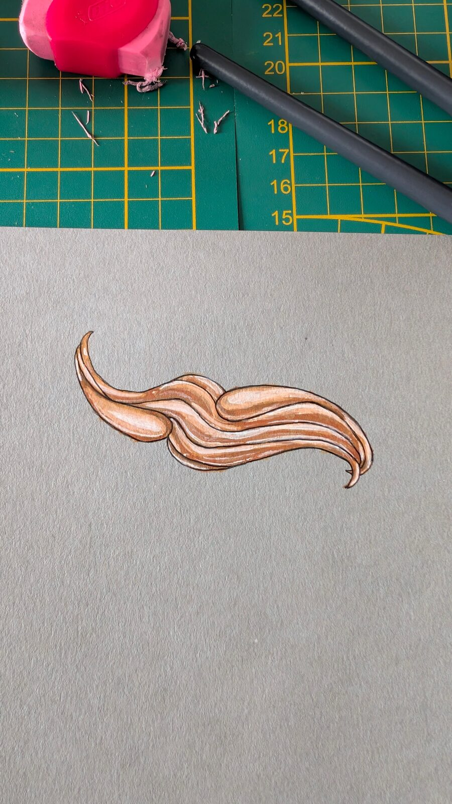
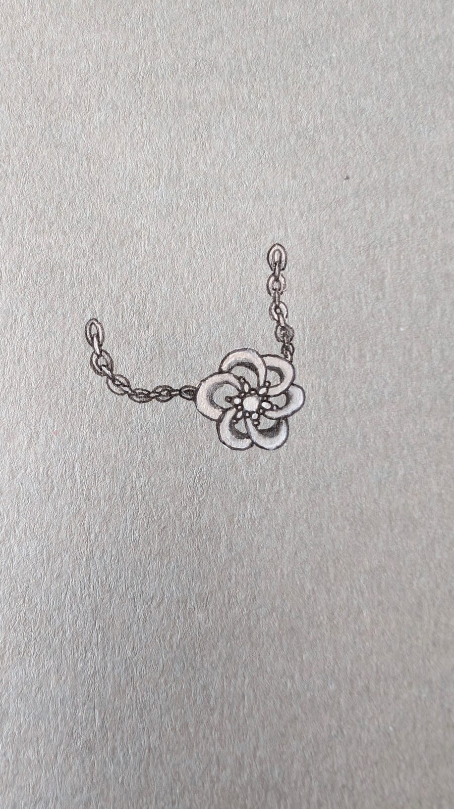
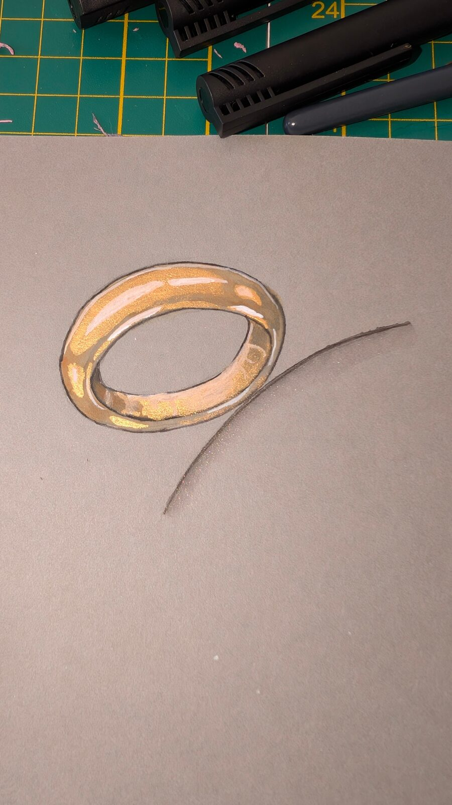

Gouachés
Dans cette catégorie, vous pouvez retrouver les tests de gouaché que j'ai réalisés. Attirée par la bijouterie depuis un certain temps, je m'y suis initiée avant le début de ma formation. Nous n'avons pas encore abordé le gouaché en ce début d'année. Ils témoignent de mes premières recherches et d'une progression que la formation viendra affiner.
-
Livres d’entrainement
Je me suis servie des livres « Apprendre à dessiner l’or » et « Apprendre à dessiner les rubis ».
-
Essais de dessin sans tuto
J’ai d’abord voulu tester sans tuto pour voir le rendu avec ma logique et ma manière de percevoir les reliefs.
-
Essais de dessin/ peinture avec tuto
Après avoir constaté que sans tuto je n’arrivais pas à recréer certains reliefs, j’ai fait des tests à l’aide des livres cités.
Essais de dessin sans tuto
Dans cette image, vous pouvez retrouver les tests de dessin sans tuto, pour essayer de comprendre les proportions et, plus simplement, le dessin de bijou.



Essais de dessin/peinture avec tuto
Dans cette image, vous pouvez retrouver les tests de peinture avec et sans tuto.





